Diverse portrait photography to portrait painting translation


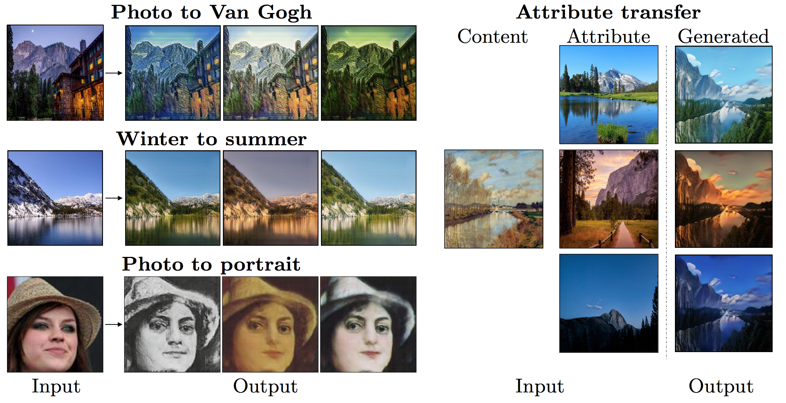
Abstract
Image-to-image translation aims to learn the mapping between two visual domains.
There are two main challenges for many applications: 1) the lack of aligned training pairs and 2) multiple possible outputs from a single input image.
In this work, we present a disentangled representation approach for producing diverse outputs without paired training images.
To achieve diversity, we propose to map images onto two spaces: 1) a common content space capturing shared information across domains and 2) a domain-specific attribute space.
We train a generator that takes encoded content features extracted from given inputs and attribute vectors randomly sampled from the attribute space to produce diverse outputs at test time.
To handle unpaired training data, we propose a novel cross-cycle consistency based on disentangled representations.
Qualitative results show that our model can generate diverse and realistic images on several tasks without paired data.
For quantitative comparisons, we measure realism with user study and diversity with a perceptual distance metric.
We apply the proposed model to domain adaptation and show competitive performance when compared to the state-of-the-art on the MNIST-M and the LineMod datasets.
Citation
Hsin-Ying Lee*, Hung-Yu Tseng*, Jia-Bin Huang, Maneesh Kumar Singh, and Ming-Hsuan Yang, "Diverse Image-to-Image Translation via Disentangled Representations", in European Conference on Computer Vision, 2018.
* indicates equal contributions
Bibtex
@inproceeding{DRIT,
author = {Lee, Hsin-Ying and and Tseng, Hung-Yu and Huang, Jia-Bin and Singh, Maneesh Kumar and Yang, Ming-Hsuan},
title = {Diverse Image-to-Image Translation via Disentangled Representations},
booktitle = {European Conference on Computer Vision},
year = {2018}
}
Models
Disentangled Representation Image-to-Image Translation (DRIT)
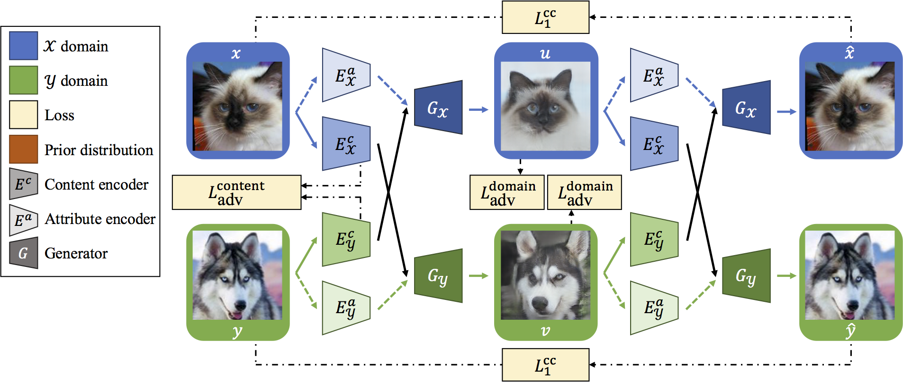
Results
* Click to see results from different methods
Portrait (photography) to Portrait (painting)
| DRIT (Ours) | CycleGAN+noise | CycleGAN+BicycleGAN |
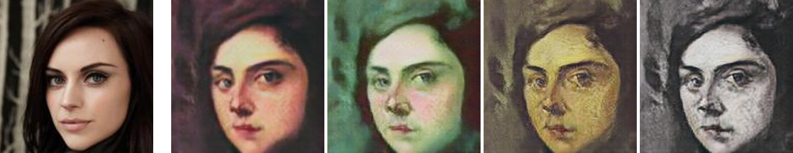
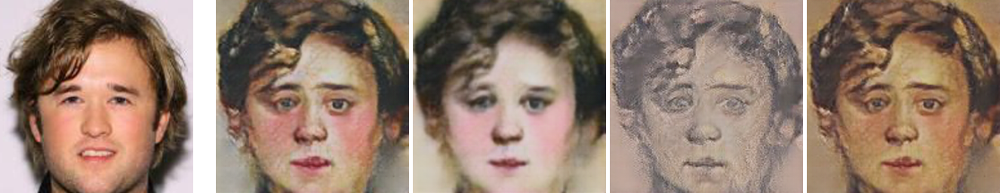
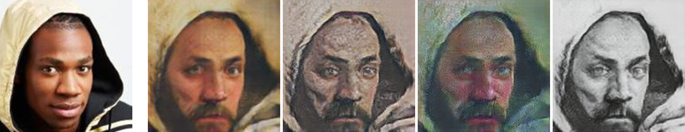
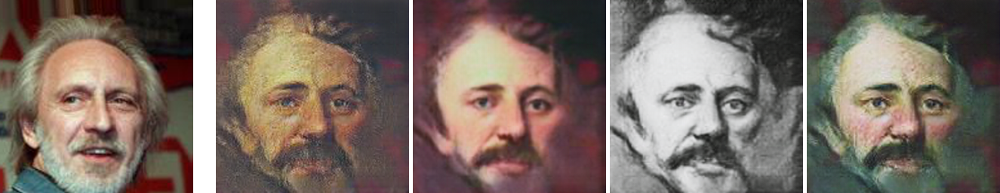
Yosemite Winter to Summer
| DRIT (Ours) | CycleGAN+noise | CycleGAN+BicycleGAN |

Photo to Monet
| DRIT (Ours) | CycleGAN+noise | CycleGAN+BicycleGAN |
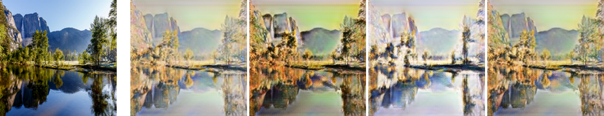

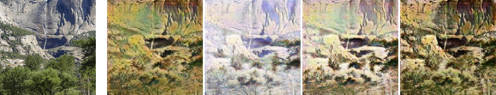
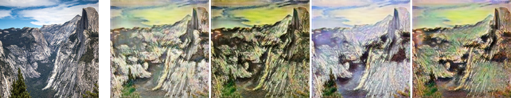
Cat to Dog
| DRIT (Ours) |
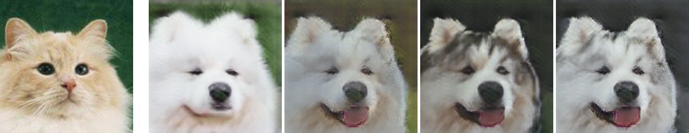
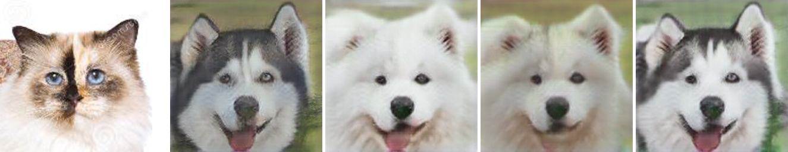
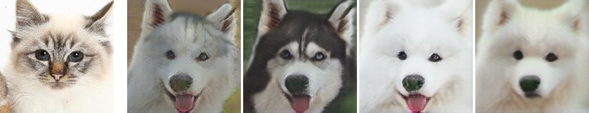
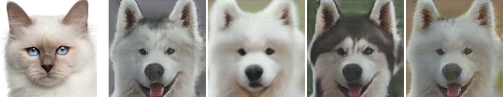
References
- • Jun-Yan Zhu*, Taesung Park*, Phillip Isola, Alexei A. Efros "Unpaired Image-to-Image Translation using Cycle-Consistent Adversarial Networks". ICCV, 2017.
- • Jun-Yan Zhu, Richard Zhang, Deepak Pathak, Trevor Darrell, Alexei A. Efros, Oliver Wang, Eli Shechtman "Toward Multimodal Image-to-Image Translation "NIPS, 2017.
- • Xun Huang, Ming-Yu Liu, Serge Belongie, Jan Kautz "MUNIT: Multimodal UNsupervised Image-to-image Translation ECCV, 2018.